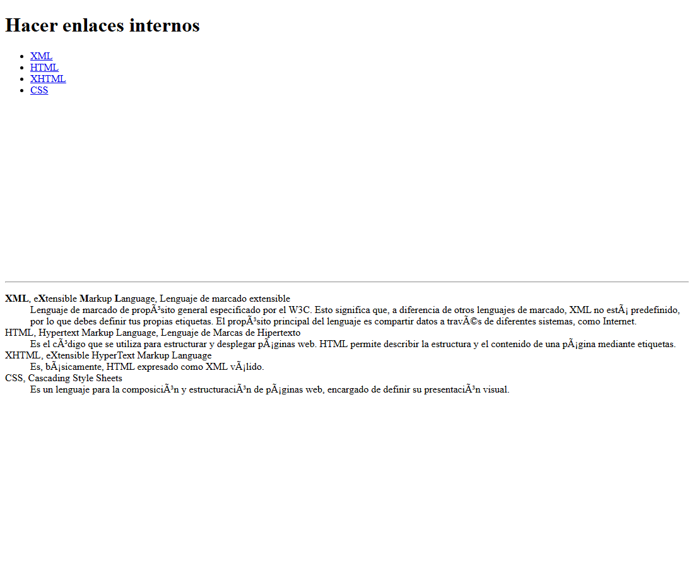

Hacer enlaces internos
- XML, eXtensible Markup Language,
Lenguaje de marcado extensible
- Lenguaje de marcado de propósito general especificado por el W3C. Esto
significa que, a diferencia de otros lenguajes de marcado, XML no está
predefinido, por lo que debes definir tus propias etiquetas. El propósito
principal del lenguaje es compartir datos a través de diferentes sistemas,
como Internet.
- HTML, Hypertext Markup Language, Lenguaje de Marcas de Hipertexto
- Es el código que se utiliza para estructurar y desplegar páginas web.
HTML permite describir la estructura y el contenido de una página mediante
etiquetas.
- XHTML, eXtensible HyperText Markup Language
- Es, básicamente, HTML expresado como XML válido.
- CSS, Cascading Style Sheets
- Es un lenguaje para la composición y estructuración de páginas web,
encargado de definir su presentación visual.
Resultado
